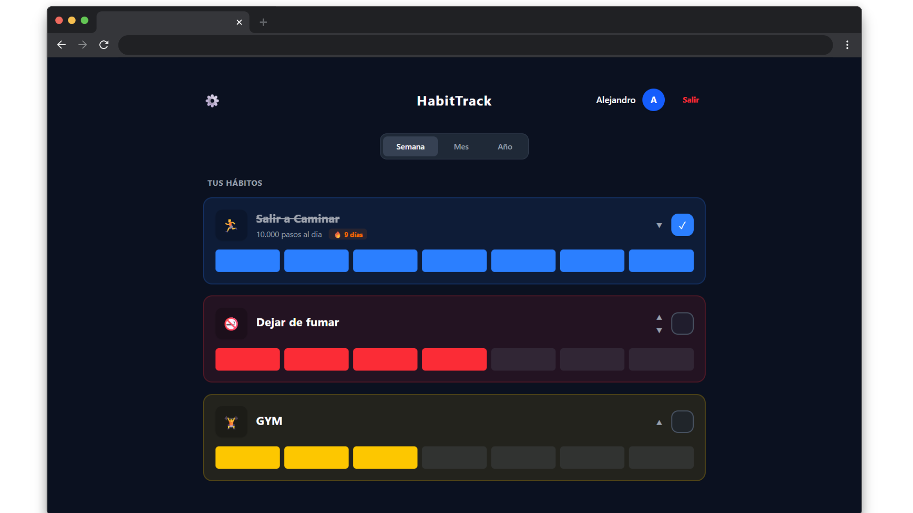
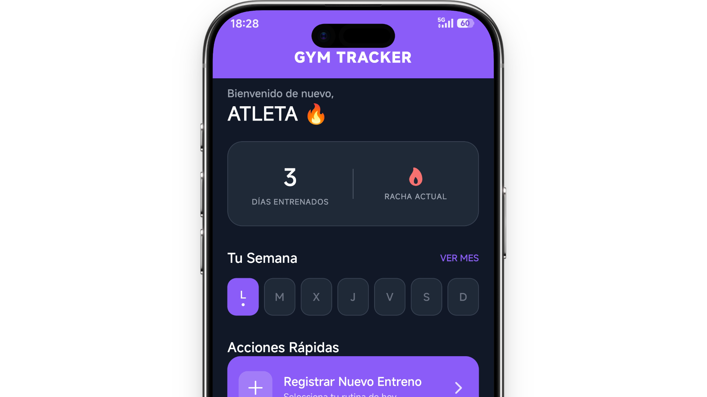
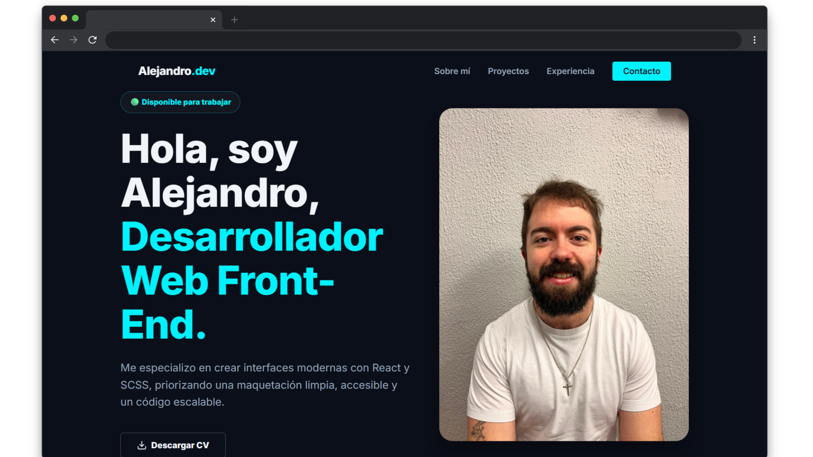
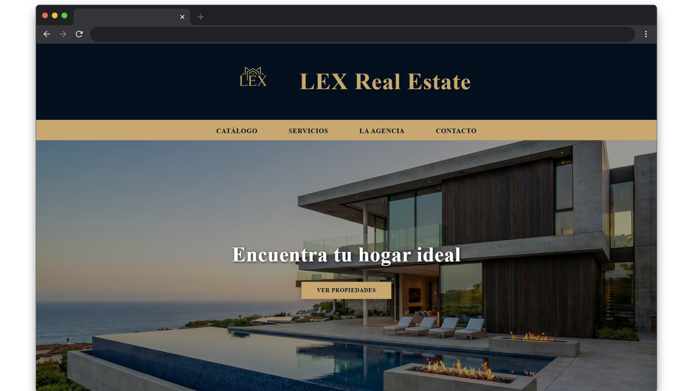

🟢 Disponible para trabajar
Hola, soy Alejandro,
Hola, soy Alejandro,
Desarrollador Web Front-End.
Me especializo en crear interfaces modernas con React y SCSS, priorizando una maquetación limpia, accesible y un código escalable.
Sobre mí
Un vistazo a mi perfil, mi formación y mis herramientas de trabajo.
Soy un desarrollador web con formación en Desarrollo de Aplicaciones Web (DAW) y Sistemas Microinformáticos. Me apasiona el ecosistema Frontend, donde combino la lógica del código con el cuidado por la experiencia de usuario.
Mi objetivo es escribir código limpio, escalable y mantenible. Cuando no estoy delante del editor o trasteando con alguna nueva tecnología, lo más probable es que me encuentres entrenando o con un buen libro entre manos.
Stack & Tecnologías
Desarrollo Frontend
- HTML5 Semántico
- CSS3 / SCSS
- JavaScript (ES6+)
- React
- Tailwind CSS
- jQuery
Herramientas & Control de Versiones
- Git
- GitHub
- VS Code
- Lighthouse (A11y)
Arquitectura & Metodologías
- Diseño Responsive
- Mobile First
- Metodología BEM
- SCSS (Patrón 7-1)
Proyectos Destacados
Una selección de mis desarrollos más recientes e ideas en proceso.

GymTracker (En desarrollo)
Aplicación móvil orientada al registro avanzado de rutinas de entrenamiento físico, cálculo de volúmenes y progresión de cargas.


Experiencia y Formación
Mi recorrido técnico y académico hasta la fecha.
Abril 2026 - Junio 2026
Junior Web Developer (Prácticas)
Izertis
Desarrollo y mantenimiento de interfaces web. Aplicación de buenas prácticas en Frontend, resolución de bugs y trabajo en equipo usando metodologías ágiles y control de versiones.
Finalizado en Junio 2026
Grado Superior (DAW)
Desarrollo de Aplicaciones Web
Formación completa en el ecosistema web. Desarrollo del Trabajo de Fin de Grado (HabitTrack) aplicando React, Tailwind CSS y arquitectura de componentes.
Titulación Previa
Grado Medio (SMR)
Sistemas Microinformáticos y Redes
Base sólida en hardware, administración de sistemas operativos, redes locales y seguridad informática.
Fines de semana
Monitor de Actividades Extraescolares
Sector Educativo
Gestión de grupos, resolución de conflictos en tiempo real y desarrollo de habilidades comunicativas y de liderazgo (Soft Skills).